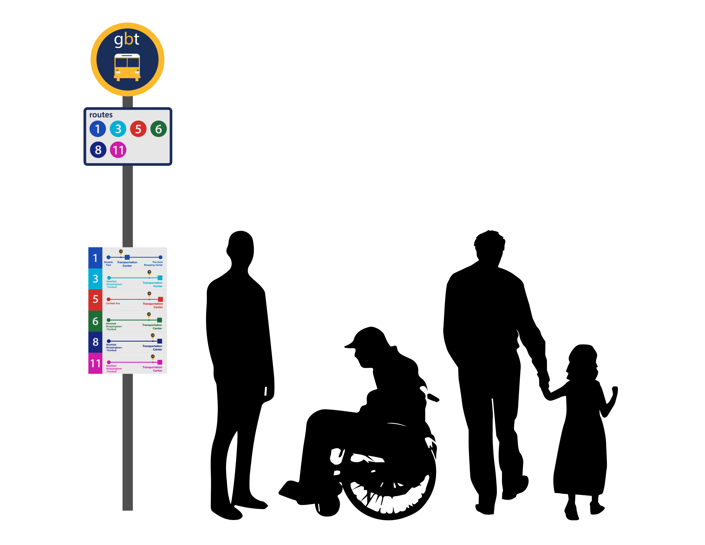

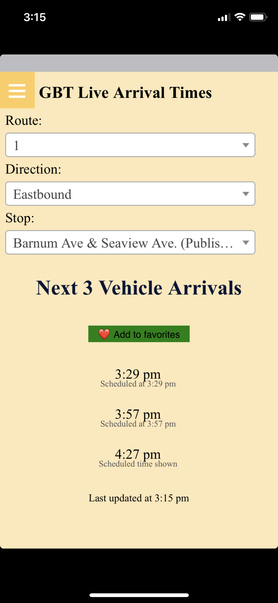


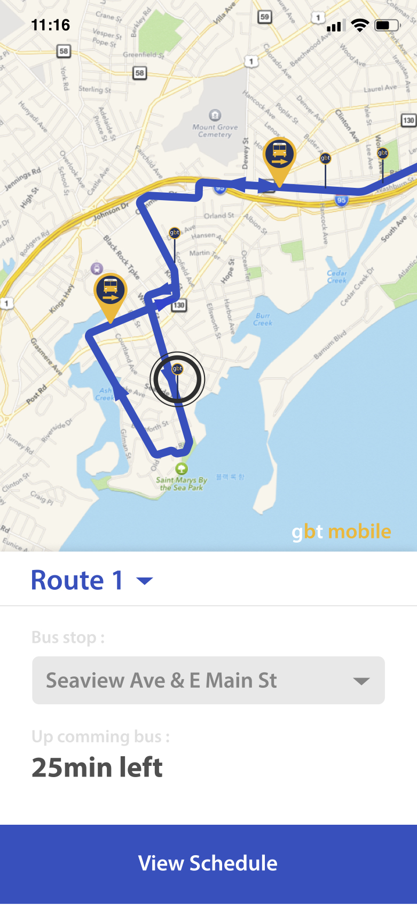
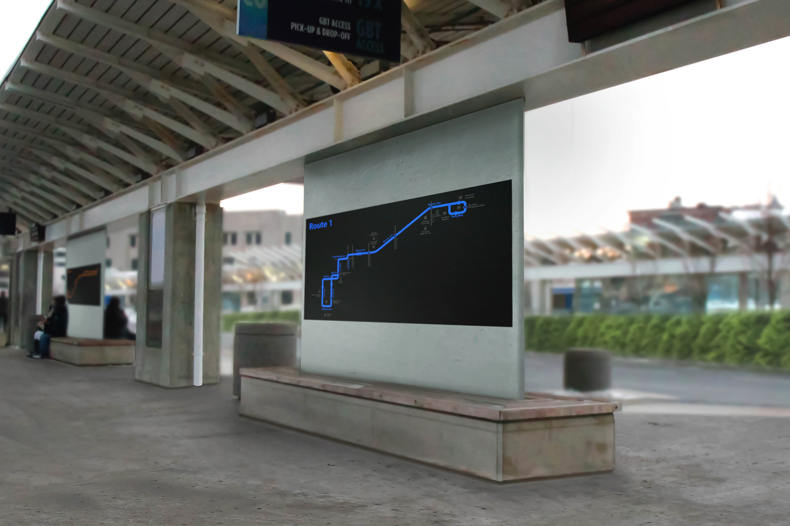
GBT Transportation System
Greater Bridgeport Transit (GBT) is a transit service locate in Bridgeport in Connecticut.
GBT provides local bus service. But GBT's system is very behind the times.
There is no information on the bus stop. The app was so complicated that people couldn't see the schedule,
and people had to wait for the bus because they didn't know where it is.
GBT needs a new bus stop sign that contains the simple but necessary information,
and a new simple and attractive map to place at the central bus station.
They also needed new applications that were easy for users to use.
The idea of putting a map on a bus was excluded because the bus did not run on only one route,
but continued to run on another route as the numbers changed.
Current Problems
Bus Stop
- There are only bus numbers.
- No information about the time or interval of the bus arrives.
- Hard to recognize the number from a far distance.
- No information for the direction of the bus.
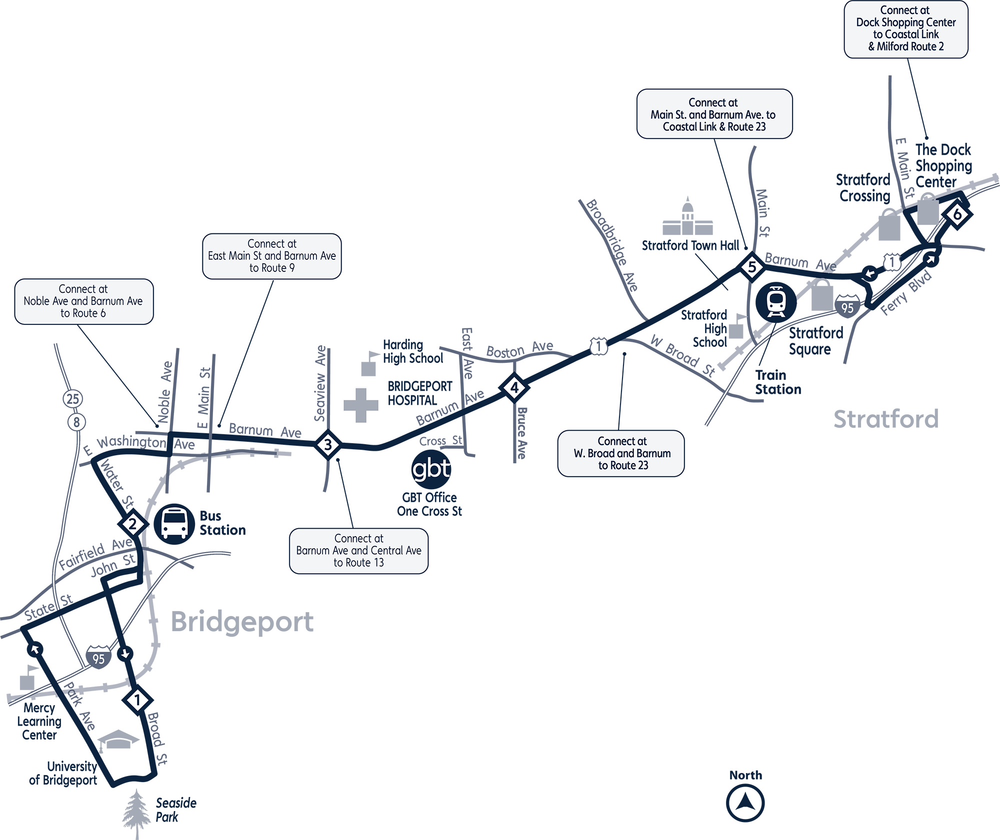
Route Map
- Too much detail for each road.
- Bus station has only QR code of map.
- Bus routes in one color cannot be marked with multiple routes at the same time.
- The orientation of the arrow is uncertain.
Mobile Application
- It has an unfriendly interface.
- Contains advertisements.
- There is no map.
- Information is only available at the time the bus is running.
- There is no full schedule.
Bus Stop Design
Idea Sketches
Final Design
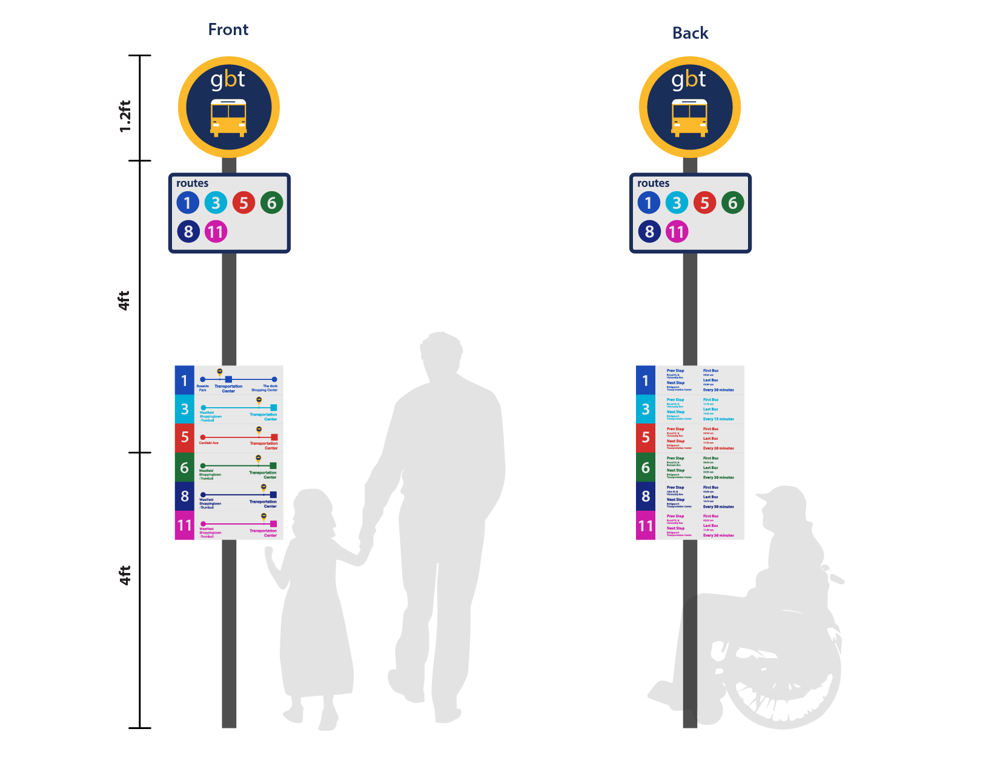
Changes
It Can easily recognize it as a bus stop by making bus symbols larger and GBT smaller.
The front panel shows where each bus came from, and where the final destination is.
On the back, the time of the first and last buses and the interval between the buses, and the previous and next stops are written.
Guides, including bus numbers and schedules, were placed low for easy viewing in wheelchairs or children’s eyes.
Route Map Design
Idea Sketches
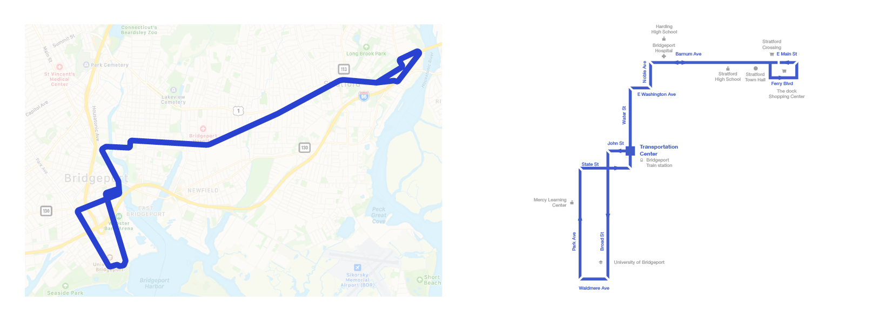
Final Design
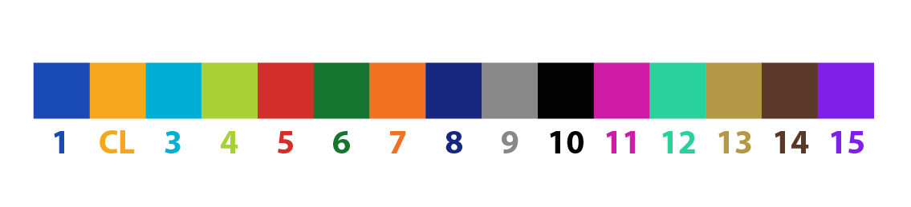
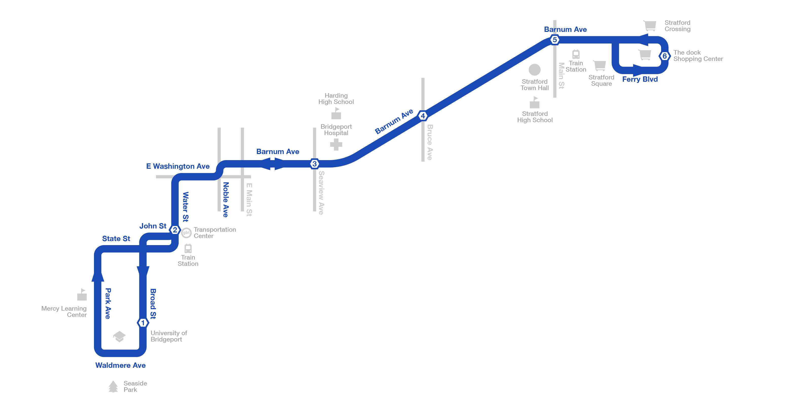
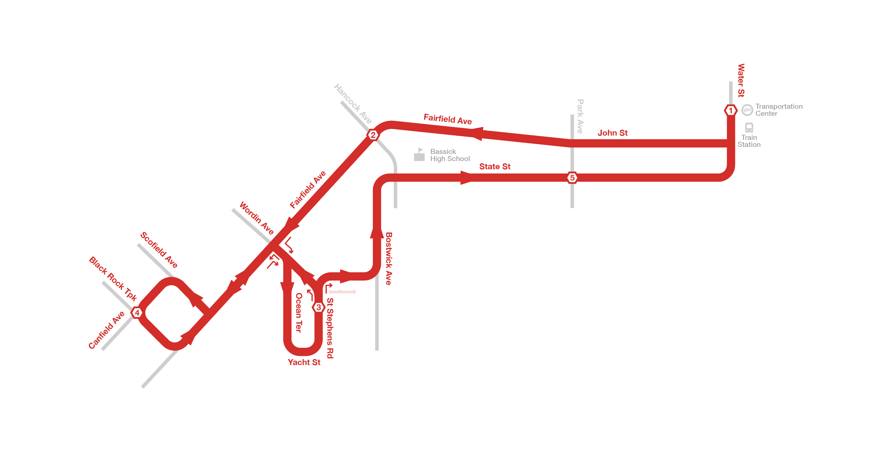
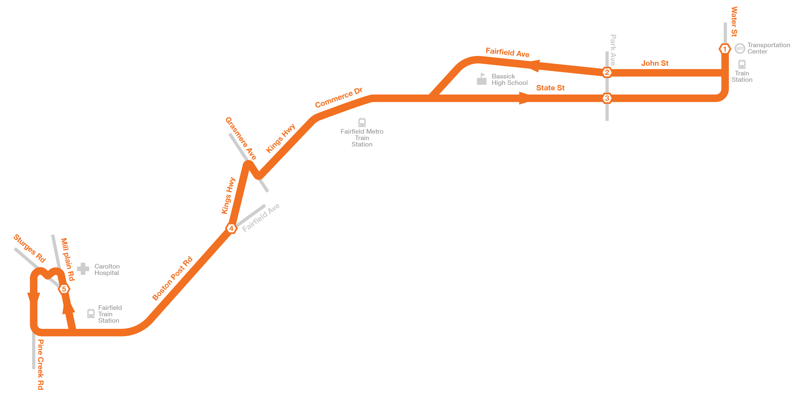
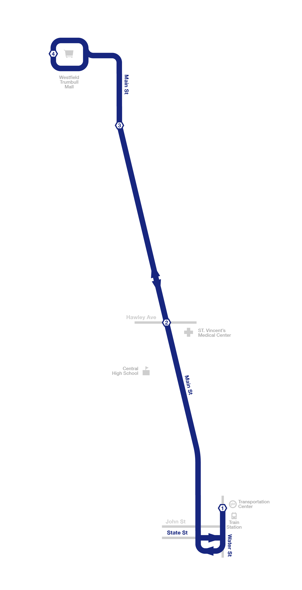
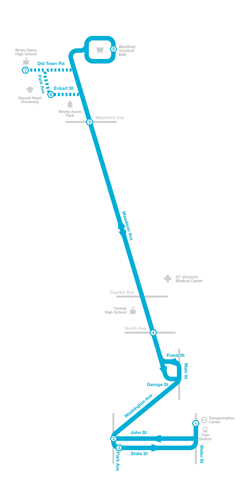
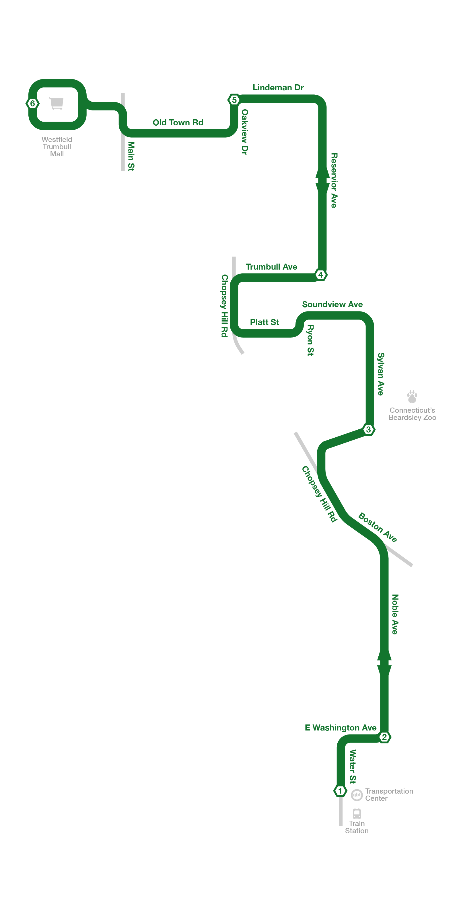
Changes
Colors add on the map to people quickly distinguish routes.
The new map to be placed on the bus station was made easy to see by entering only the necessary information.
It is designed to keep the true distance ratio.
The main stations are numbered, making it easier to tell which direction the buses are going.
To avoid confusion, the map was designed in two directions to be fixed northward.
Mobile App
Mobile
A large map that fills the screen shows you where the bus is going in real-time.
If users select a bus stop, they can see the time of the bus that will arrive soon.
Press the Schedule button to view the expected arrival time of the bus at each stop.
Final Looks